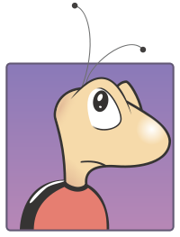
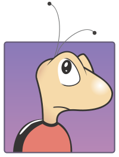
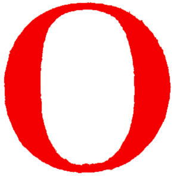
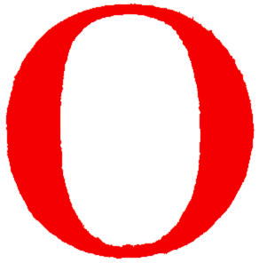

Hello! My name is Joe Czepil and welcome to my personal website. I am currently a student at the University of Victoria studying Software Engineering. I designed this website as my first personal project alongside school, from here I plan to start new projects and use this website as a method to display them. There is also a small section on some of my selected skills. If you would like a more informative display of my experience check out my Linkedin profile below. At the bottom there is a small blurb describing a little more about myself. If you have any questions, suggestions to improve my website, or new project ideas please send me an e-mail.
 



 


Check out my LinkedIn!
If you're reading this I assume you've already read the small section at the top and want to learn a little about me so let's get to it. One of the things I enjoy in my spare time is gaming, World of Tanks and Dark Souls 2 are my most played at the moment but I have a number of other games I jump to from time to time. Soccer is another thing I enjoy, I have played it for 14 years now at competitive and recreational levels. Currently I play with the UVic Engineering recreational soccer team in intramurals and I join a few of the players on weekends to kick a ball around. Mountain biking and downhill skiing are a couple of my other interests. I haven't participated in either of them much at all since university started but I plan to start up again soon. You can view some of my old biking videos here. Besides that I enjoy cooking, my dad has always been a great barbecuer and cook and I plan to follow him on his road to being the master chef of the kitchen, or at least his kitchen.